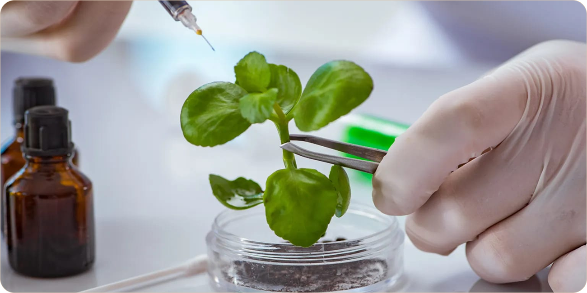
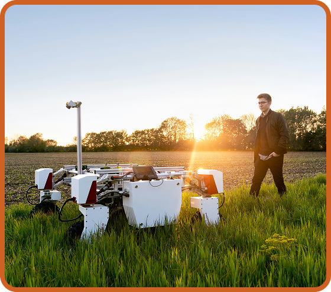

Tecnologia para alimentar mais pessoas com menos desperdício
Com mais pessoas para alimentar, a tecnologia ajuda a produzir, armazenar e distribuir alimentos com mais eficiência. Ela aumenta a produtividade, reduz desperdícios e usa recursos naturais de forma mais inteligente.

Tecnologias no Campo
-

Drones
usados para monitorar plantações, identificar pragas, doenças e áreas com problemas.
-

Gps
permite mapear áreas da plantação e orientar máquinas com maior precisão.
-

Sensores
medem fatores como umidade do solo, temperatura e condições das plantas, ajudando na tomada de decisões.
Biotecnologia e melhoramento genético

A biotecnologia ajuda a criar plantas mais resistentes, adaptáveis e produtivas. Pesquisadores estudam genes para desenvolver variedades com características desejadas. A biotecnologia moderna avança o melhoramento genético tradicional, permitindo estudos mais precisos sobre genes e características específicas. Organismos geneticamente modificados, como OGMs, são um exemplo disso. Eles podem facilitar a produção agrícola, desde que acompanhados por pesquisa, regulamentação e avaliação de impactos.
Automação e Robótica
A automação transforma etapas como plantio, colheita, classificação e transporte, tornando esses processos mais rápidos, precisos e eficientes. A robótica também auxilia em tarefas que exigem muita mão de obra, como identificar frutos maduros, controlar plantas invasoras e monitorar as condições das plantações. Com o uso de sensores, câmeras e sistemas inteligentes, essas tecnologias ajudam a reduzir desperdícios, aumentar a produtividade e melhorar a qualidade da produção agrícola.

Tecnologia e sustentabilidade
A tecnologia deve produzir alimentos de forma mais sustentável. Isso significa usar água, energia e fertilizantes com mais eficiência e evitar impactos ambientais desnecessários. Agricultura de precisão reduz o uso excessivo de insumos, enquanto reaproveitamento transforma resíduos em novos produtos, compostagem ou energia.
-
A tecnologia não resolve sozinha. São necessários investimentos em infraestrutura, educação, pesquisa, políticas públicas e distribuição para alimentar mais pessoas com qualidade.
-
Produzir para grandes populações exige mais do que apenas aumentar a quantidade. É preciso criar um sistema que produza, conserve, transporte e distribua alimentos com qualidade, segurança e menos desperdício.